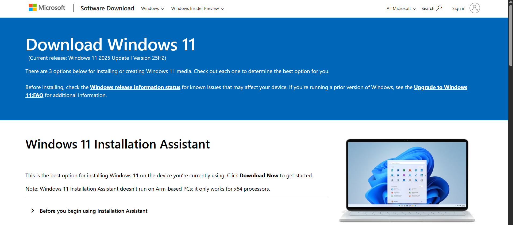
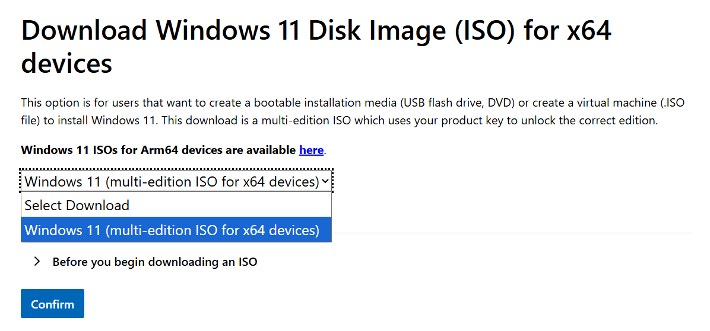
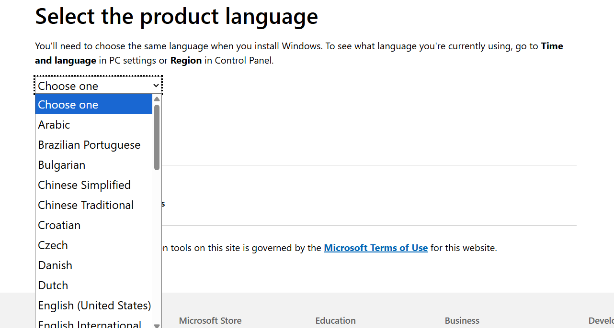
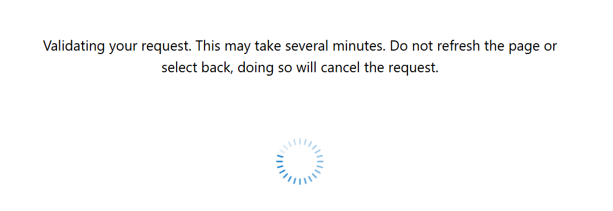
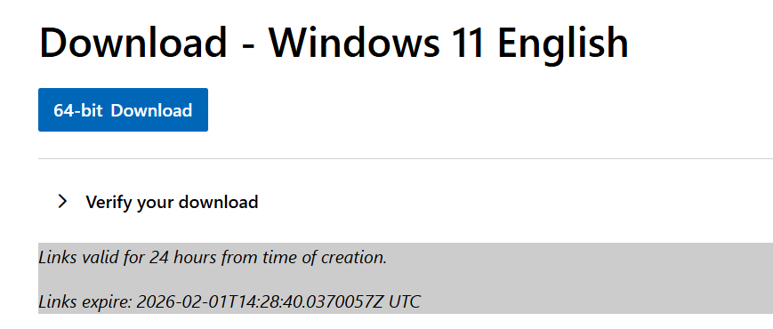

Microsoft, being the pain in the ass they are, decided to remove support for all computers that don't have an 8th gen processor, secure boot, and tpm 2.0
so, this "killed" a bunch of computers, that are still perfectly fine, just because of these assholes...
so, i'll teach you how you can bypass this and run windows 11 on the WORST of computers...
for example, i got it running on a merom, intel core two duo with 2 gigabytes of ram...
alright, enough yap now, let's get into it!
the first thing you need to do is get rufus, from here, or you can download it directly from here!
this is the latest version as of 31-01-2025, so a newer version may be available!!!you also need a pendrive, 16 gigabytes worked the best for me!
then, download the windows iso from the microsoft servers, here
then, it should lead you to this page
from here, scroll down a bit until you see windows 11 disk image (iso)
from here, click the dropdown menu and select the only option there, then hit confirm again.
then select your language, i went with english us, but you can scroll down to your language. make sure you don't get this wrong!!
it will show this several times, so just wait it out...
now you can download the iso! click 64-bit download.
alright! now open up rufus. double click the file you installed and select your iso in the "boot selection" dropdown
make sure target system is set to what you will use! mbr/bios for machines that have legacy bioses, mostly computers from before 2017
and uefi for newer computers, choose uefi only if your laptop/computer supports it!!
now click start!
it will show you some options, with "bypass tpm 2.0 and secure boot check" already enabled, if it isn't turn it on! you NEED this for the patch to work
after its done flashing, reboot your computer and boot off the pendrive, or press windows+e and select your drive under the "this pc" dropdown
then hit setup! if you did it the reboot way, you do it like a normal installation of windows! just use upgrade instead of custom.
and that's it! you now have windows 11 working!!
go back